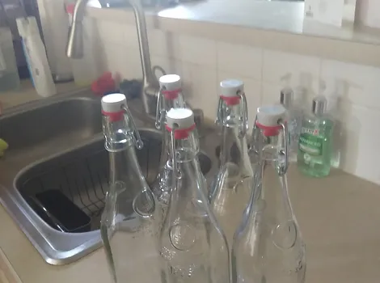

|  |
|---|
| RSE-021 after being cleansed |
RSE-021 refers to a collection of five mint condition reusable glass swing-top bottles with a door on their sides, labeled RSE-021-1 through RSE-021-5. Despite having an obvious stopper at the opening of each bottle, RSE-021 is opened similar to that of a medicine bottle, requiring the user to push both ends of the lid in and rotating. RSE-021 instances are able to hold up to one liter of any liquid.
RSE-021 has the unique ability to convert any liquid to its base ingredients once poured inside and sealed. This process is unable to be witnessed, as the glass of the bottles fog up and become visually unclear until finished. No amount of liquid is left behind. Once completed, the door located on the sides of the RSE-021 instances will open allowing the raw ingredients to be removed.
RSE-021 is held within a padded wooden crate located in the Anomalous Objects Hall of Location 04. The bottles are to be thoroughly cleansed and disinfected after each testing session.